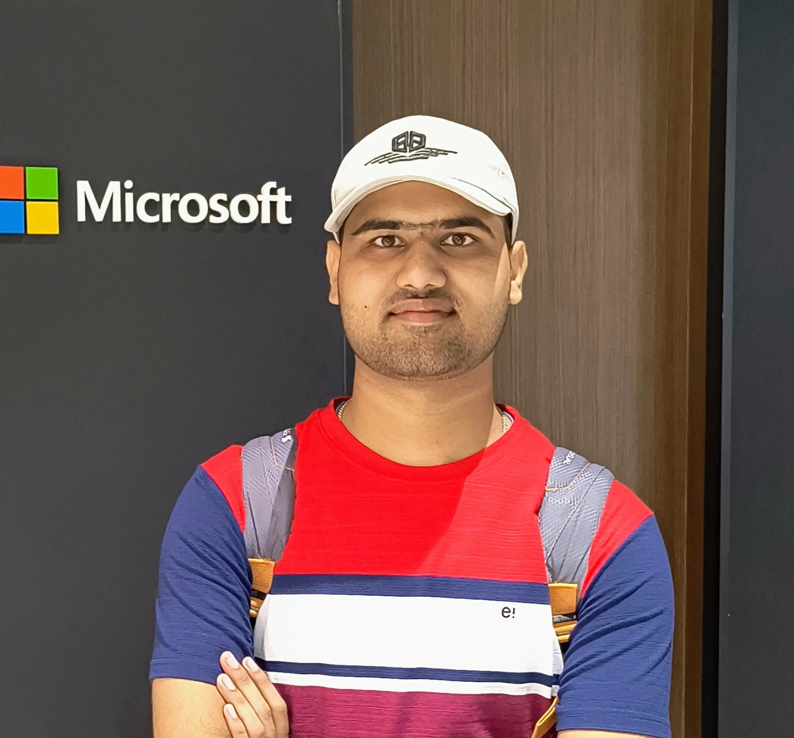

Naitik Kumar
Developer, Visionary & Open Source MentorAs a 3rd-year Computer Science student, I'm driven by a passion for building technology that empowers and connects people. Readify is a product of this passion—a blend of my love for literature and my skills in software development.
My journey in tech has been enriched by experiences as an open-source mentor and through challenging internships where I've contributed to real-world projects.
Industry Experience & Contributions
Deloitte
IIT Delhi
IIT Bombay
IIT (BHU) Varanasi
Open Source